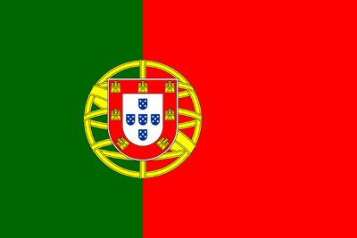

Portugal: A Truly Spectacular Destination 
Location
Portugal is located in the southwestern most part of Europe.
Portugal a part of the Iberian peninsula consiting of Spain and Portugal and is only borderd one country which is Spain on its East coast.
Portugal's capital is Lisbon which functions as the central hub for the countries activities.

Government, Economics, and History
It is the 14th largest Nation in Europe with a population of 10,291,196.
It remains a relatively small country, andin terms of its population density it is pretty proportional to the overall size of the country.
Portugal joined the European Union in 1986 and still remain a part today endorsing the European Integration Process.
They adopted the Euro as their common currency in 1999 and it remains the currency used throughout the country .
Portugal is a semi-presidential republic, and the citizens participate in choosing their leaders.
Portugal has four sovereign bodies: the President of the republic who is the Chief of State, The Assembly of the Republic, the courts, and the Government.
The Prime Minister is the head of Government
| City | Population | Population Density (Residents Per Sq. Mile) |
|---|---|---|
| Lisbon | 517,802 | 14,100 |
| Porto | 249,633 | 15,000 |
| Amadora | 178,858 | 19,000 |
| Braga | 121,394 | 2,700 |
Demographics
- Language - The offical language is Portuguese.
- Age - The median age is 42.2 years, with males at 40.2 and Females at 44.4.
- Growth Rate - Population growth rate barely increased in 2017 only .04%
- Migrants - Their are 2.5 migrants for every 1,000 people.
- Urbanization - 64.6% of the population lives in Urban Areas
- Religion - Their is no official relgion while the predominent religion is Christianity with a large majority being Roman Catholics (81%).
- Literacy - 95.7% literacy rate, Men: 97.1% , Female: 94.4%
 Be Amazed by the Spectacular City of Porto, 5 Star Beaches On Hand.
Be Amazed by the Spectacular City of Porto, 5 Star Beaches On Hand. Beautiful City of Amadora; Near Lisbon
Beautiful City of Amadora; Near Lisbon